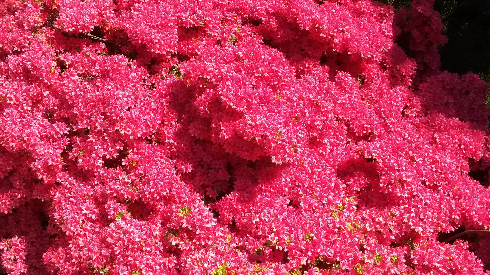
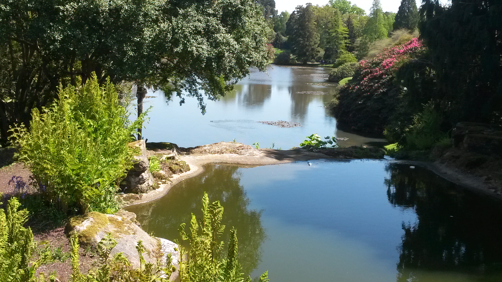
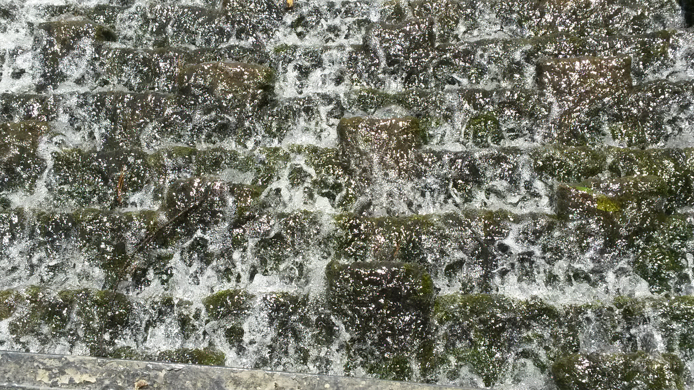
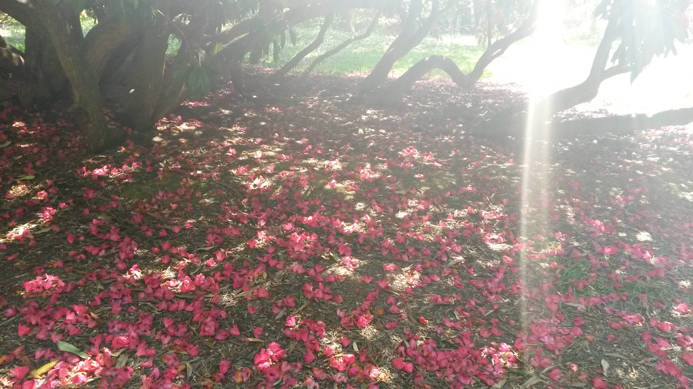
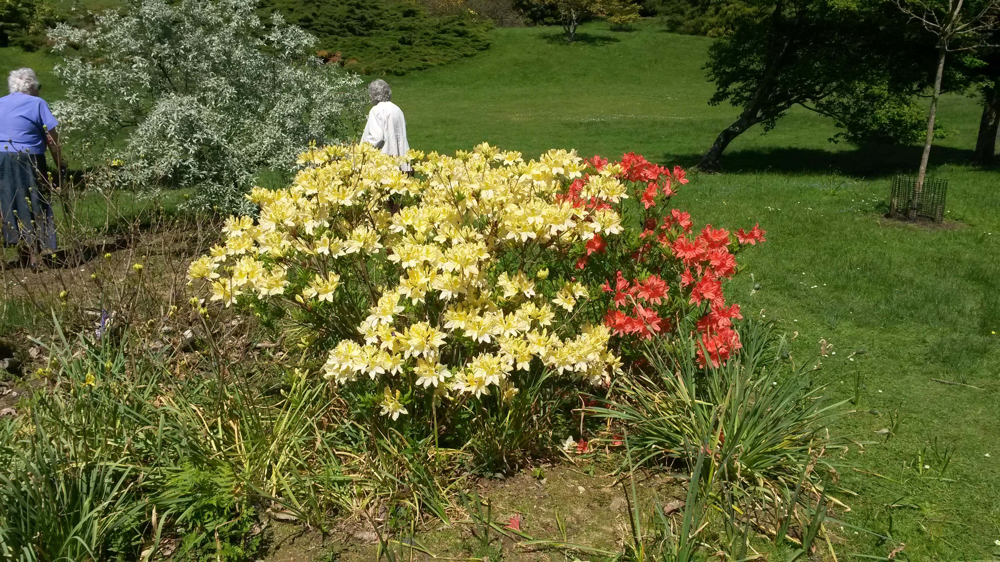

Here are a collection of images, most of which I took when I was around 14 or
so (late 2015), all of nature, plants, animals, or pretty views, etc.
A waterlily, at Priory Park. Taken 15 August 2015.I think these are bluebells. A bumblebee inspecting the lavender.If anyone knows what this is, let me know. It's very pretty.Some not quite ripe elderberries.Again not sure what they are, but nice and pretty.The fountains at the Cliffs Pavilion.Facing out from the stately home, but cannot remember where. I'll update if I do.And facing back towards the home.A little footbridge over the water.A nice tree.A nice bench to sit at by the tree above.An admiral butterfly, resting on the towels on the washing line.A spider hanging mid-air in the conservatory.Some cows at Hadleigh Farm, 11 October 2015. Not sure what variety.A somewhat unflattering side profile of one of the cows.Hadleigh Castle. On a lovely day as well.Lovely clouds in the sky.Some shrivelled up elderberries at Hadleigh.Some red berries. Maybe haws? I don't really know.These are unripe blackberries I think.A tree. I remember my mum saying this was her favourite tree.Looking back up to Hadleigh Castle.I've forgotten where this is. It's near Brighton. It was taken 16
May 2015.

A bush with lovely pink flowers.

A sort of lagoon by the pond.

Water rushing down the steps.

The light shining through onto lovely pink petals.The light shining through the red leaves.

Red and yellow red and yellow red and yellow red and yellow.